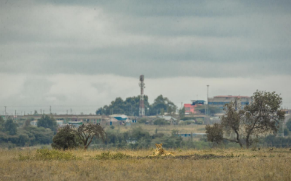
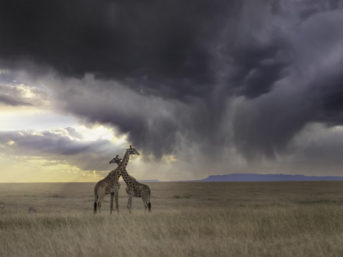
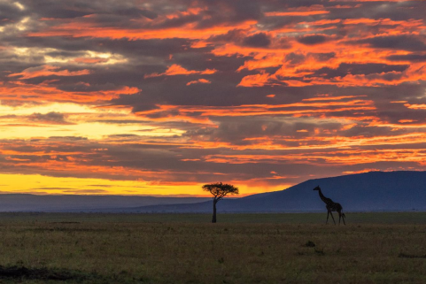
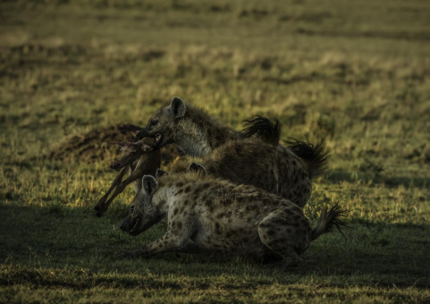
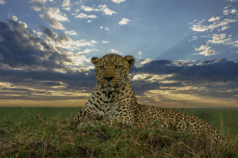
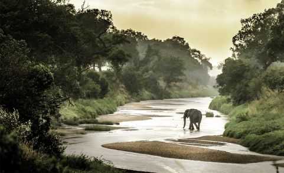
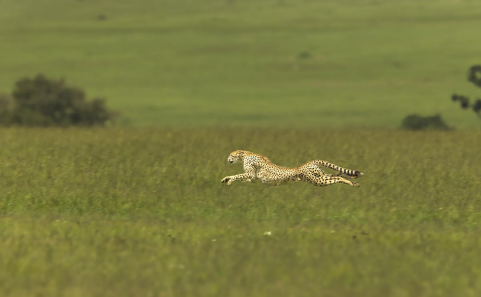

Day 1 - Nov 14th 2023 - spanOur drivers would pick up from the JKIA airport at 7AM. You would board our 4*4 Landcruisers to embark on your journey to Maasai Mara. The road journey takes about 5 to 6 hours, but you would be amazed by the landscape enroute. You would first see the Nairobi national park on your left side. On a lucky day, you would also see a White Rhino grazing near the fence. Nairobi city has a national park right in its heart!! And it is home for Lions, Leopards, White rhinos, gazzelles, Giraffes, crowned cranes, and other mammals and birds. This is the only city in the World which boasts a National park within the city limits.
After one hour you would climb up to The Great Rift Valley. This is one priced attraction of Kenya. Formed a millions years back, this valley boasts beautiful lakes and escarpments, which provide havens for plentiful wildlife. The Great Rift Valley runs for 4,000 miles (6,400 kilometers), from Jordan in southwestern Asia to the coast of the Indian Ocean in central Mozambique. We suggest you request your driver to stop when you are on top and enjoy the views of this Nature’s marvel. You would reach Maasai Mara by noon. Complete your check in formalities and proceed to lunch. After lunch, you would go on your first game drive on the great plains of Maasai Mara!!
This afternoon, our experienced Maasai guides/drivers would take you around the Talek and Topi plains area. There you would find a lot of ungulates, antelopes, zebras and also a huge pride of Lions. This pride is called the ‘Topi Pride’. Relax, sit back and enjoy God’s creations. You would be so excited to see the endless plains of Maasai Mara with its dwellers. Return to your camp after 6PM. Refresh yourself and head towards the camp fire. Meet up with your group and listen to their first day experience at Mara. Share your magical experiences with them. Have dinner and retire for the day ( LD )
Day 2 - Nov 15th - Wake up early. Freshen yourself and head to the restaurant for a hot cup of coffee or tea. The mornings are cold at Mara, so do wear your fleece jacket for the morning game drive. Breakfast would be packed for you. Explore the mornings at Mara. The Sunrise you witness at Mara is something which you would never get to witness anywhere in the World. Just pray that it does not rain!!
Our guides would park the vehicle under a tree for you to have a bush breakfast. This is an out of the World experience. At a distance you can see the animals peacefully grazing while you are enjoying your food. Post your breakfast, proceed again on the game drive. Mid mornings while the Lions sleep is a good time to look around for the cheetahs. November is also the season when the Topis give birth to young ones. On a lucky day, you might witness a Topi giving birth to a little one. Keep a watch on the hyenas as they would always be around a pregnant Topi!
Return to your camp around 11.30AM. Take a nice shower and some much needed rest. Lunch would be served from 12.30 Noon. Have a hot lunch and a short nap. The afternoon game drive would start at 3PM. Today our drivers would try and locate a leopard for you.
Do ask your driver to stop where ever you want to click pictures. Return to the camp post sunset and enjoy your evening at the camp fire with your group. Have dinner and retire early as you have a full day game drive tomorrow. ( BLD )
Day 3 - Nov 16th - Today is a very busy day for you at Mara. Wake up early, freshen yourself, have a hot beverage and jump into your designated vehicles. Today you would be going towards the border of Maasai Mara. You would be going for a full day game drive with packed breakfast and lunch.
Sand river is the border for Maasai Mara and Tanzania. This has been the entry point of the migratory animals for millions of years. You would be amazed to see such a small river separates two different countries!! Enjoy every bit your time as this is your last day of game drive for this trip. Have lunch and take a small nap like our Maasai guides. Then proceed towards your camp. On the way back encounter a pride of lion. During your stay at Mara, you would have seen the Big 4 our of the Big 5. The Rhino being very elusive is going to be a difficult find. But this area is know for the Rhinos. If you are lucky you would get to see one. Return to the camp with great memories. Spend you evening at the camp fire before having dinner. Retire for the day. Sadly the holiday has come to an end. But at the end you would release that it was the journey which was so beautiful. Have a blissful night. ( BLD )
Day 4 - Nov 17th - Wake up at leisure, have a nice and heavy breakfast while you discuss about your experience with your group. Board the designated Landcruisers to embark on the journey to Nairobi. You would be dropped at the JKIA airport. End of services. ( B )